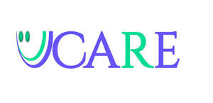

Trade Mark Journal No.2025/030 25 July 2025
UK00004235412 17 July 2025 (8,10,20,21)

- Class 8
- Scissors; Sewing scissors; Hairdressing scissors; Cuticle scissors; Embroidery scissors; Nail scissors; Pruning scissors; Metal-cutting scissors [tin shears]; Hair cutting scissors; Gardening scissors; Poultry scissors; Scissors for pizzas; Scissors for children; Scissors for kitchen use; Wick trimmers [scissors]; Needle work scissors; Scissors (Non-electric -) for wallpaper; Blades for shears; Tweezers; Knife sharpeners; Pliers; Blades for knives; Folding knives; Butcher knives; Knives [hand tools]; Razor blades; Hair-removing tweezers; Wire cutters [hand tools]; Nail files; Nail files, electric; Electric nail files; Nail files, non-electric; Fingernail files; Roller heads for electronic nail files; Emery files; Foot files; Needle files; Nail buffers for use in manicure; Nail buffers; Extractors (Nail -); Electronic foot files; Nail nippers; Files [hand-operated]; Foot file roller heads for removing hardened skin; Nail extractors, hand-operated; Callus rasps; Callus cutters.
- Class 10
- Pliers for dental use; Surgical pliers; Dental braces; Dental burs; Burs (Dental -); Dental tools; Dental syringes; Dental implants; Dental drills; Dental picks for use in dental treatment; Pliers for medical use; Pliers for veterinary use; Dental excavators; Dental instruments; Dental drill bits; Dental equipment; Dental probes; Bite trays [dental]; Gloves for dental use; Dental chairs; Dental apparatus; Orthodontic brackets [braces] for use in straightening teeth; Implants [prosthesis] for dental surgery; Implant materials [prosthesis] for use in dental surgery; Needles for dental purposes; Dental bridges; Dental picks; Forceps for dental technical purposes; Drills for dental purposes; Forceps for medical use; Surgical forceps; Medical and surgical catheters; Medical and surgical laparoscopes; Forceps; Medical stethoscopes; Medical syringes; Medical knives; Medical implants; Medical instruments; Medical spatulas.
- Class 20
- Non-metal safety gates for babies, children, and pets; Support pillows for use in baby car safety seats; Support cushioning for use in car safety seats for babies; Safety cots; Safety keys, not of metal; Safety locking devices [not of metal, non-electric]; Child resistant security closures (Non-metallic -) for bottles; Child resistant security closures (Non-metallic -) for containers; Expandable safety gates for stairs; Expandable safety gates for door openings; Safety locks [non-metallic, non-electric].
- Class 21
- Shoe horns; Cookware; Steamers [cookware]; Aluminium cookware; Tableware, cookware and containers; Cookware for use in microwave ovens; Bakeware; Griddles [cooking utensils]; Cookware and tableware, except forks, knives and spoons; Non-electric griddles [cooking utensils]; Griddles [non-electric cooking utensils]; Spatulas [kitchen utensils]; Aluminium bakeware; Cookware, except forks, knives and spoons; Cooking utensils; Cooking pans; Cooking pots and pans [non-electric]; Non-electric cooking pots and pans; Grills [cooking utensils]; Kitchen utensils of silicon; Skillets; Kitchen utensils; Tenderizers [kitchen utensils]; Ovenware; Cooking pans [non-electric]; Non-electric cooking pans; Cooking utensils, non-electric; Household or kitchen utensils; Dishes [household utensils]; Cooking pots for use in microwave ovens; Moulds [kitchen utensils]; Saucepans; Wire baskets [cooking utensils]; Saucepans (Earthenware -); Earthenware saucepans; Cooking graters; Grills in the nature of cooking utensils; Pressure cooking saucepans, non-electric; Non-electric pressure cooking saucepans; Cooking pots; Dishware; Tableware, other than knives, forks and spoons; Portable pots and pans for camping; Cooking utensils for barbecue use; Kitchen utensils, not of precious metal; Disposable paperboard bakeware; Tortilla presses, non-electric [kitchen utensils]; Metal pans; Cooking strainers; Egg separators [kitchen utensils]; Frying pans; Pans (Frying -).
Imran khan